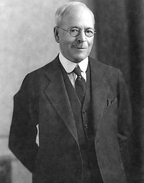
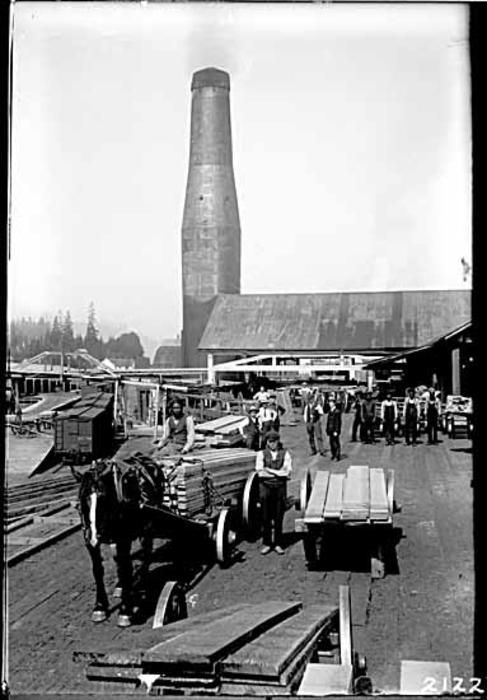

THE CITY OF VANCOUVER
Vancouver is a major city located in western Canada, with a population of 2,606,000 (2021), and a growth rate of 0.97%. From the year of 2020, the city has gained 25,000 people, despite having a low area of only 115 square kilometre.
The city is the third-largest metropolitan area in Canada, with a sky high population density of over 5,400 people per square kilometre, thus making it the fifth-most densely populated North-American city, with over 250,000 residents, behind New York city, Guadalajara, San Fransisco, and Mexico City.
Surprisingly enough, 52% of the residents in Vancouver are not native english speakers, making it one of the most ethically and linguistically diverse cities in Canada.
The city takes its name from George Vancouver, who was a british officer of the Royal Navy, who explored and charted North America's northwestern Pacific coast reagions in 1792. He gave various places british names as well.


HISTORY
The original inhabitants of Vancouver included Indians and Europeans. However, few people of european descent lived in the area until the late 1850s, when New Westminster, now a suburb of Vancouver was established.

Around 1860, thousands of miners, mainly from USA, moved into the region, being lured by the amount of gold that was in the Cariboo Mountain, to the northeast. The Scottish, along with some americans, really contributed alot to the city. In fact, the suggestion to name it Vancouver, was made by William Van Horne, an American who was president of the Canadian Pacific Railway.

Not only that, but the city's most elected mayor ( who was voted for nine non-consecutive terms from 1919 to 1933 ), L.D. Taylor, was also originally from the USA.
Furthermore, the first important industry in the area, a sawmill on Burrard Inlet, was owned by an American. This just comes to show that the Americans practically made Vancouver what it is today.
Originally called Granville in the 1870s, Vancouver was just a small settlement relying mainly on sawmilling. It was officially classified as a city in April 1886, and was renamed in honor of the English navigator George Vancouver, of the Royal Navy who had explored and studied the coast in 1792. Sadly enough, after a mere 2 months of it being classified as a city, it was devistated by a disastrous fire in less than an hour.

The city overcame the situation, becoming a prosperous port in the process, which was partly due to the opening of the Panama Canal in 1914, which made it economically possible to export grain and lumber from Vancouver to the east coasts of USA and Europe.

In 1929, Point Grey and South Vancouver, which are two suburbs to the south, joined forces with Vancouver , making its metropolitan area become the third most popular in Canada. By 1930, Vancouver was Canada's major Pacific coast port and after World War II, it cultivated into Canada's main business area for trade with the Pacific Rim and Asia.
Since World War II, alot of East Asians, mainly Chinese, immigrated to Vancouver. This resulted in a couple of Anti-Asian riots and alot of discrimination towards them in the early years of the city. An example of such discrimination is the Komagata Maru incident of 1914, on which a group of people from British India tried to immigrate to Canada, using a Japanese steamship named Komagata Maru, but were denied entry and forced to return back to Kolkata, India. The Indian royal police at the time attempted to apprehend the group the group leaders, resulting in riots. The police then fired shots, resulting in the deaths of 20 people.


FASCINATING FACTS
1. Vancouver has the mildest climate in Canada
2. It's zoo is rated the 5th best in the world
3. It is the 10th cleanest city in the world
4. 35% of the population are foreign born
5. It is home to the 1st McDonald's in Canada, introduced in 1967
6. It was originally a small sawmilling settlement called Granville in the 1870s
7. After World War II, it developed into Canada's main business hub for trade with Asia and the Pacific Rim
8. Since it's placed among snowy mountains on an ocean inlet, it has one of the most beautiful settings of any city in the world
9. It's proximity to the water and to mountains results in constantly changing weather
10. Trade and transportation are the basic components of it's economy
11. Home to Canada's largest deepwater port, that is located on Burrard Inlet
12. In the early 21st century, it ranked as the third largest film production location in North America, after Los Angeles and New York
WHY VANCOUVER ?
EDUCATION SYSTEM
All the public schools in British Columbia offer free education, as well as providing all the students with the material they will requiren to complete the whole duration of their school life. This is such a wonderful previledge that the children in British Columbia have access to. Furthermore, because of this, the educational foundation children have is nice and solid, making them well prepared by the time they enroll in a university.


Talking about universities, one of the best in the whole of Canada, the University of British Columbia (UBC), is located in Vancouver, British Columbia. This university is not only one of the best in Canada, but is also constantly featured in the top 50 universities worldwide. The University of British Columbia is a major research facility that uses top of the range facilities including one of the world's leading laboratories for subatomic physics and one of the best concert halls in the world, the Chan Centre for Performing Arts.
Excluding UBC,there are also a number of really good universities in the area, that are quite affordable and also provide high education standards.
SAFETY
Vancouver is generally a very safe area for both tourists and the residents of the city. However, like every other big city, there are distinctive areas that are often victims of crime, more than others. The most recognizable area is Downtown Eastside, also known as "The DTES", that is located relatively close to the famous Gastown and Chinatown.
DTES is one of the city's oldest neighbourhoods, meaning it's not as developed as the newer areas in Vancouver. Recently, it has been exposed to a lot of prostitution but does not pose a threat to the safety of tourists regardless.

WELL-MAINTAINED INFRASTRUCTURE
The roads in Vancouver regularly undergo routine maintenance as a way to ensure they are safe for civilians. These maintenances include pothole patching, street cleaning, ice and snow control in the snowy winters, as well as line marking, just to name a few. In addition to these routine maintenances, the roads are fully repaved annually to increase their longevity.